Chain Rule#
The Gaussian Function
The Normal density function, sometimes called the Gaussian function in honor of Johann Carl Friedrich Gauss who discovered its formula, is an important function in statistics.
Graphically, the Normal density curve is a bell curve. Roughly speaking, the value of the Gaussian function at a point  represents the probability of making an observation , when the observation is randomly selected from a population of values whose arithmetical average is
represents the probability of making an observation , when the observation is randomly selected from a population of values whose arithmetical average is  .
.
The Gaussian function is given by,
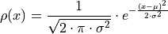
The constants, and  , are parameters of the density function. These parameters determine the shape and curvature of the bell curve. They are known quantities; in other words, they may be held constant and treated as numbers.
, are parameters of the density function. These parameters determine the shape and curvature of the bell curve. They are known quantities; in other words, they may be held constant and treated as numbers.
Use the Normal density function to answer the following questions.
Find

Find

Find the value of
where  . Solve symbolically in terms of and .
. Solve symbolically in terms of and .
Hint
 never equals 0!
never equals 0!
Find the values of
where  . What is the value of
. What is the value of  at these points? Solve symbolically in terms of and .
at these points? Solve symbolically in terms of and .Suppose
 and
and  . Use a graphing utility (Desmos is good for this) to plot the Normal density function. Draw vertical lines at the values of found in part c and part d.
. Use a graphing utility (Desmos is good for this) to plot the Normal density function. Draw vertical lines at the values of found in part c and part d.Suppose
and . Find the equation of the tangent line at the following points (yes, all of them). Round to four decimal places where appropriate.Plot the tangent lines on top of the Normal density function using the same graphing utility as part e.
Find the value of
 at each point in part f.
at each point in part f.Suppose
and . Plot the first and second derivative of the given Normal density curve on the same graph as part e.What happens to the Normal density function at the point found in part c?
What happens to the Normal density function at the points found in part d?


Hint
What happens to the direction of the tangent line at each of the critical points found in part d? Look at the tangent lines plotted in part g!
Deriving the Quotient Rule
Recall the Product Rule and Quotient Rule for differentiation,
The Product Rule is simpler to remember than the Quotient Rule. Moreover, the Quotient Rule can be derived from the Product Rule using the Chain Rule, if we recall one simple rule of exponents,

In this problem, we will show how to apply this property of exponents to get the Quotient Rule from the Product and Chain Rule.
Write the quotient
 as a product using a negative exponent.
as a product using a negative exponent.Take the derivative of the expression in part a by applying the Product Rule and then the Chain Rule.
Find a common denominator and simplify the expression in part b.
2005, Free Response Form B, #3
A particle moves along the x-axis so that its velocity v at time t, for  , is given by
, is given by
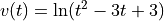
The particle is at position  at time
at time  .
.
Find the acceleration of the particle at time t = 4.
Find all times t in the open interval at which the particle changes direction. During which time intervals, for
, does the particle travel to the left?Find the position of the particle at time
 .
.Find the average speed of the particle over the interval

2023, Free Response, #5
x |
0 |
2 |
4 |
7 |
|
10 |
7 |
4 |
5 |
|
|
-8 |
3 |
6 |
|
1 |
2 |
-3 |
0 |
|
5 |
4 |
2 |
8 |


The functions  and
and  are twice differentiable. The table shown gives the values of the functions and their first derivatives at selected values of x.
are twice differentiable. The table shown gives the values of the functions and their first derivatives at selected values of x.
Let
 be the function defined by
be the function defined by  . Find
. Find  . Show the work that leads to your answer.
. Show the work that leads to your answer.Let
 be a differentiable function such that
be a differentiable function such that  . Is the graph of concave up or down at the point where
. Is the graph of concave up or down at the point where  ? Give a reason for your answer.
? Give a reason for your answer.
2016, Free Response, #6
x |
|
|
|
|
1 |
-6 |
3 |
2 |
8 |
2 |
2 |
-2 |
-3 |
0 |
3 |
8 |
7 |
6 |
2 |
6 |
4 |
5 |
3 |
-1 |
The function and g have continuous second derivatives. The table above gives values of the functions and their derivatives at selected values of .
Let
 . Write an equation for the line tangent to the graph of at
. Write an equation for the line tangent to the graph of at  .
.Let
 . Find 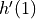.
. Find 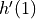.
2017, Free Response, #6

x |
|
|
-5 |
10 |
-3 |
-4 |
5 |
-1 |
-3 |
2 |
4 |
-2 |
3 |
1 |
-1 |
1 |
-2 |
0 |
0 |
-3 |
Let be the function defined by 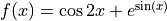.
Let be a differentiable function. The table above gives values of and its derivative  at selected values of .
at selected values of .
Let be the function whose graph, consisting of five line segments, is shown in the figure above.
Find the slope of the line tangent to the graph of
at  .
.Let
be the function defined by  . Find
. Find  .
.Let
 be the function defined by 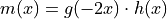. Find 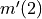.
be the function defined by 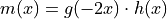. Find 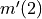.Is there a number
 in the closed interval 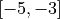 such that
in the closed interval 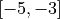 such that  ? Justify your answer.
? Justify your answer.